It is a sad fact that few Satanists know the real meaning of our symbols. Most take false and erroneous information from Christian sources. Christians show their stupidity and ignorance incessantly. Knowledge is their most formidable enemy for no scam, no hoax, nor any lie can succeed when one has knowledge of the truth. Every Satanic symbol represents powerful spiritual meaning in regards to humanity reaching the godhead of spiritual and physical perfection and immortality. Most if not all Satanic symbols pertain to the true spiritual knowledge and the human soul.
| 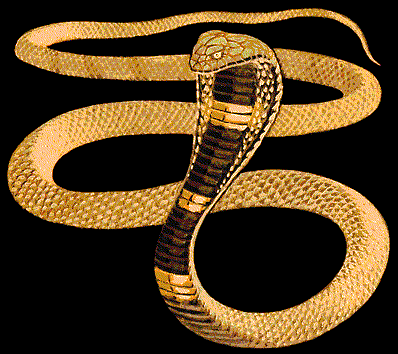 | THE SERPENT: The most sacred symbol in Satanism. The serpent represents the kundalini force at the base of the spine. When the serpent is activated through power meditation and specific exercises, it ascends through the seven chakras, bringing intense awareness, enlightenment, psychic powers and abilities, and all-knowing. The hooded cobra, seen in many ancient carvings and paintings in Egypt, symbolizes the resulting expanded consciousness of raising the serpent. This is the TRUE foundation of Satanism- raising the serpent. Those who are successful in raising the serpentine energy are on a much higher spiritual level and can no longer be deceived by Christianity and its related programs. |
| 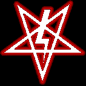 | The Point Down Pentagram symbolizes energy entering our crown chakra from above. The Satanic Lightning Bolt symbolizes Satan as our True Creator God. The lightning bolt is the life force- the bioelectricity. All point down symbols in Satanism represent energy from above descending and giving life to, and empowering the human soul. |
| 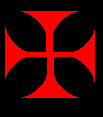 | The Equal Armed Iron Cross is seen in most Demon Sigils and represents the correct alignment of the chakras and the shape of the human soul. |
| 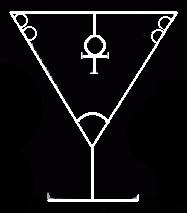 | Lucifer has several sigils. All have to do with reaching the godhead. His symbol at left represents the True GRAIL. This is the cup that holds the elixer of life. The Catholic Church STOLE this concept and corrupted it. The Grail is part of the Magnum Opus, the potential of which we have within ourselves. It is not a material object, it is a concept. The "blood of the chakras" is the energy they leak when stimulated. The Grail is depicted as "Royal Blood." this is the 'blood' of the chakras. |

| The symbols on the left are of Astaroth. Both were derived from the Egyptian Ankh. |
| 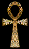 | The Egyptian Ankh represents the key to the soul and the heart chakra. The glyph for the planet Venus was derived from the ankh. Both the planet Venus and the heart chakra are of Astaroth. |
The colors RED, WHITE, and BLACK date back not only to Ancient Egypt, but
to their origins in the Far East. Egypt was known as the "Black and Red Land"
and was the center of Alchemy. Alchemy is the transformation of the human soul
into the godhead. Through this transformation, we complete Our Creator Satan's
unfinished work. The colors red, white and black are of the three major nadis of
the human soul. The Ida is black, the Pingala is red, and the Sushumna is white.
"DARKNESS"
The association of "darkness" with Satanism has been
totally twisted. This is not about spooks, ghouls or any other crap like that.
Satanic "darkness" has to do with the "yin" in the "yang." This represents the
female side of the soul; the subconscious mind that we access through
meditation. The Serpent of Satan is of the female side of the soul. The male
side of the soul is the logical side- the left brain. The female side is the
right side of the brain. The soul has both positive and negative poles. Both the
male and the female must work together. The logical male side; the left brain
directs the female side through thought and will. The female side of the soul is
the powerhouse of the soul. The female side makes manifest the thoughts and
ideas generated from the male logical side. The female side is also the creative
aspect of the soul; dreams, music, feelings and intuitions. Because of the power
to direct one's own destiny and the spiritual freedom that comes with this are
of the female side of the soul, the Christian Churches and their related ilk,
such as Islam, work at promoting an inferior image of women; with Islam being
brutal to women, and the incessant denegrations of women in the Judeo/Christian
bible. All of this in addition reflects on the subconscious, subliminal level to
suppress and deny the female power of the soul. Through centuries of this
enforced garbage, which is nothing more than a program to remove spirituality,
the female side of the soul and its powers have atrophied. This is why humanity
and this world are in such an ugly mess right now. This has created a most
serious imbalance that has become generational. Satanism works through power
meditation to empower the female side of the soul to regain balance and
restore spiritual health, along with empowering the individual.
| 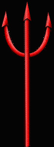 | The "Devil's Pitchfork" is actually a very ancient symbol
predating Christianity by thousands of years. This symbol originated in
the Far East [where Christianity and its Jewish root stole from copiously;
hideously perverting and corrupting the massive theft beyond recogntion,
in order to destroy spiritual knowledge and keep spiritual power in the
hands of the "Chosen" few]. It is known as the "TRISHUL" and symbolizes
piercing through the three knots in the base, the heart and 6th chakras,
also known as "granthis" in Sanskrit. For the serpent to ascend, all three
must be open. The Trishul symbolizes the serpentine energy piercing
through the three granthis. The image of Baphomet of western occultism was taken from the image of Shiva [above]. Note the position of the arms, one pointing upwards and the other downwards. The Baphomet again is symbolic of both the male and the female aspects of the soul. Note the Baphomet is both male and female, as also seen with in images of the Egyptian God Akhenaton. The horns are symbolic of Mercury, which is the vril, chi, witchpower, lifeforce, prana. | 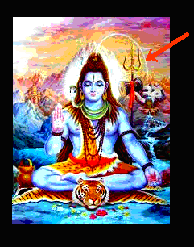 The wings of the soul represent spiritual freedom. The goat symbolizes fertility- fertility in multiplying the life force, vril, which activates and raises the serpent. The "Goat of a Thousand Young" is referring to the crown chakra, "Sahasrara" in Sanskrit which means "Thousand Petaled Lotus." |

| The horns are symbolic of the life force, the witchpower,
vril, chi...This is symbolized by the symbol for the planet Mercury [shown
directly below]. "Mercury" is known as "Messenger of the Gods." "God/s" is
a code-word for the chakras. Note the horns shown on the image of Azazel
[shown at left], with the rays shining fromm his head, representing the
risen serpent. 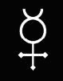 |
| 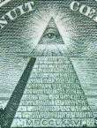 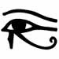 | The PYRAMID is symbolic of the shape of the human chakra. The missing capstone represents the unfinished work and the ALL-SEEING EYE represents the gnosis and all-knowing when one reaches the godhead. This state is also known as "SAMADI" or "SUPER CONSCIOUSNESS." The photo at left was taken from the US One Dollar Bill. The United States, government and all, was founded upon Masonic prinicples and is not Christian by any stretch of the imagination. Original Freemasonry was of Satan. |
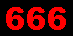 is the Kabbalistic square of
the Sun. 666 is the all-important solar chakra. The true meaning of the "Temple of Solomon" is the TEMPLE OF THE
SUN. "Sol" "Om" and "On" are all words for the Sun. "Sol" is the Latin word
for the Sun and is close to the English word "soul." "Om" is a name given by the
Hindus to the Spiritual Sun and "On" is an Egyptian word for Sun. The symbolism
of the Temple of Solomon was stolen by the Jews and made into a fictitious
character, as with the fictitous nazarene and nearly everything in the
Judeo/Christian Bible. For more information:
The Removal and Desecration
of the Original Gentile Religious Texts
and
Exposing Spiritual
Corruption: Spiritual Alchemy & The Bible
| The true meaning of the "Temple of the Sun" is spiritual. This symbolizes the perfected soul, where the rays from the solar [666] chakra, which is the center of the soul and circulates spiritual energy, radiates into 8 separate rays. The shining soul is symbolized by the sun. 8 is the number of Astaroth. This is also "The New Jerusalem." The name of "Jerusalem" has also been stolen and corrupted into a city in Israel. "Jerusalem" IS A CONCEPT! | 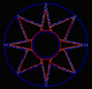 | 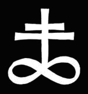 |
Note on the two Satanic symbols on the far right above, the number 8 is the symbol for infinity/immortality. The 8 is turned on its side. The double cross symbolizes the human soul at the solar [666] and heart/shoulder chakras. The 8 pointed star to the left is the Star of Astaroth. The Catholic Church labeled this as "Sigil of the Beast." Anything having to do with spirituality has been maligned, slandered, blasphemed and desecrated by the Christian Churches.
The shining perfected soul is also symbolic as "The Light."
| 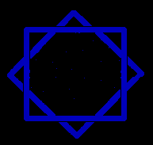 | Astaroth's symbol at left symbolizes the balance and equilibrium, obtained when both the Ida and Pingala nadis are equally active, and the Sushumna is no longer dormant. |
| 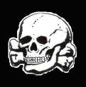 | The Skull and Bones is symbolic of the Nigredo [transformation] stage of the Magnum Opus (The transformation of the soul into the godhead). This is the death stage in the work, before the soul is purified into the godhead. The dross is separated from the pure. |
| 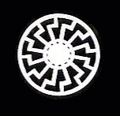 | The Black Sun, the Raven, the Crow, and the color black also symbolize the Nigredo [transformation] stage. The Black Sun is the astral Sun. |
| 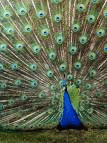 | The Peacock is sacred to Satan and represents the third eye and the multi-colored stage
of the Magnum Opus following the Nigredo [transformation]. Lucifer, Lucifer, stretch your tail, and lead me away full speed through the strait passage, of the valley of death, to the shining light, the palace of of the Gods -Isanatha Muni |
| The inverted cross is a very ancient symbol, YES, predating Christianity and its Jewish root by thousands of years. Its true meaning symbolizes the correct way of aligning the chakras. The all-important solar [666] chakra is aligned point down, and gives the soul its power. |
Concerning the Solar Chakra and Freemasonry: The character "Hiram Abiff" is another allegory. Note "HIRAM" is a very ancient mantra for the Sun. The Black Sun [astral Sun]. Hrim ties into the freemason Hiram Abiff. “presented to all candidates during the third degree in Freemasonry.” Note THIRD- the third solar chakra. The gold chakra. The Sun chakra, which is also symbolized by the swastika. From Wikipedia: article on Hiram Abiff Hiram Abiff (also Hiram Abif or the Widow's son) is the central character of an allegory presented to all candidates during the third degree in Freemasonry. Hiram is presented as the chief architect of King Solomon's Temple, who is murdered in the Temple he designed by three ruffians during an unsuccessful attempt to force him to divulge the Master Masons' secret passwords.
NOTE: “Hiram is presented as the chief architect of King Solomon's Temple.” In other words, the solar chakra symbolized by the Satanic inverted cross, is the source of the magnum opus and the powerhouse of the soul. This is also symbolized by Thor's Hammer. The solar chakra is the "architect of the soul." All energy to empower your soul comes from this chakra. The solar chakra being located near the navel is also the spot where we were first nourished and given life in our mother's womb. Hiram Abiff is not a character, but a CONCEPT. The "secret passwords" are the mantras and words of power that awaken and empower the chakras. All of the ancient Pagan religions placed emphasis on the Sun. The Sun is the giver of life and this also includes the astral Sun of the soul; the "Temple of Solomon." The solar chakra also plays a key role in the magnum opus.
© Copyright 2006, 2008, 2011, 2015 Joy of Satan Ministries;
Library of Congress
Number: 12-16457